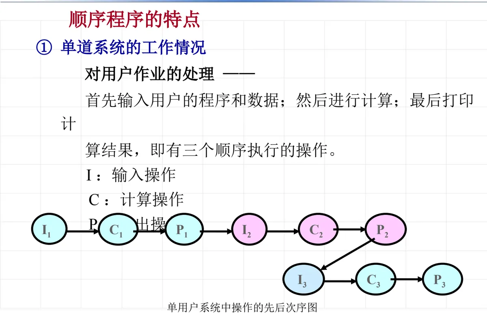
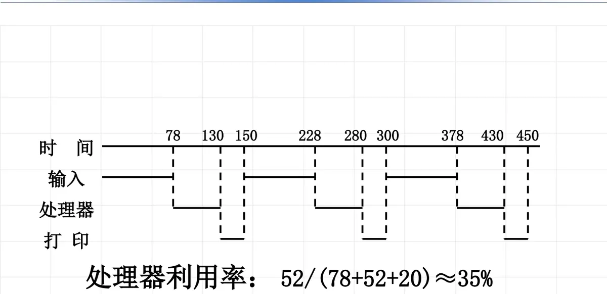
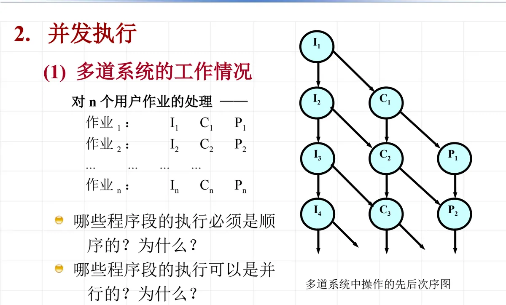
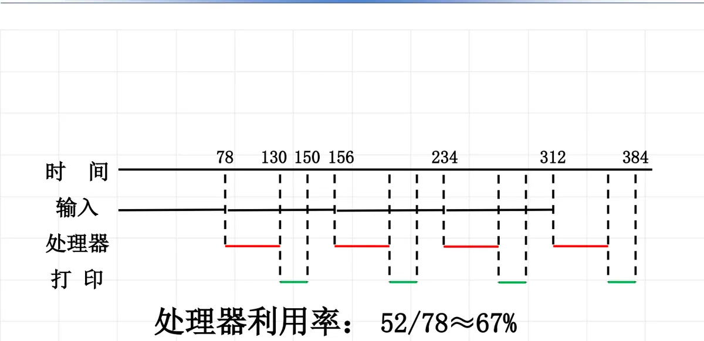
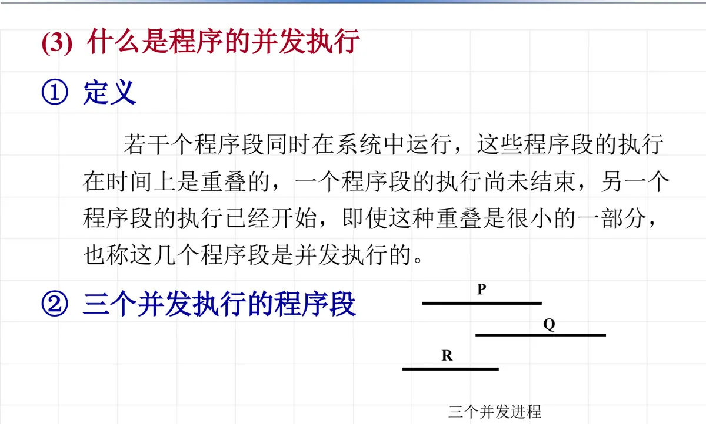
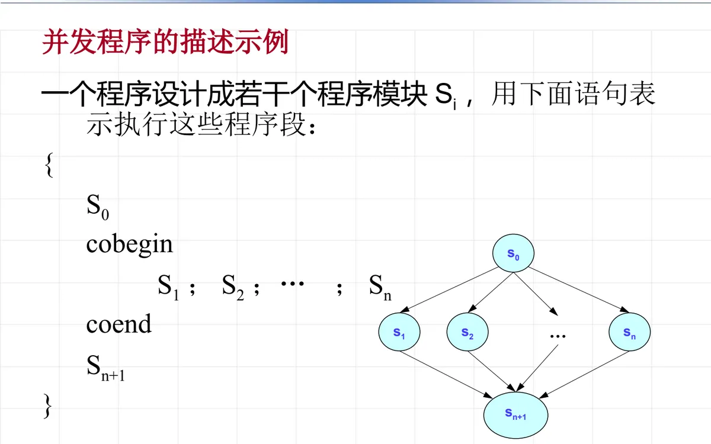
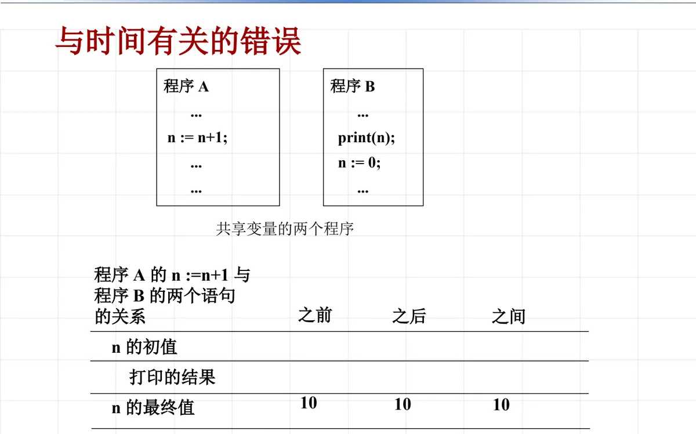

操作系统原理 · 第 4 章 进程及进程管理
4.1 进程的引入
从这一章开始进入本课程的核心：进程及进程管理。要讲清「进程」，得先讲清它为什么会出现——单道批处理系统里程序顺序执行，虽然结果可靠，但计算机的效率低得可怜；多道系统让程序并发执行，效率上去了，可靠性和可再现性却丢了。这一节就走这条线索：先看顺序执行的特点与代价，再看并发执行的由来、描述方法和代价，最后引出并发带来的三个新问题，为下一节「进程概念」作准备。
1. 程序、数据与计算
先明确三组基本概念。用来表示人们思维对象的抽象概念的物理表现叫做数据；数据处理的规则叫做操作（指令）；对某一有限数据的集合所施行的、目的在于解决某一问题的一组有限的操作的集合，称为一个计算。计算机就是用指令来处理数据。而程序是数据和指令的集合，即「数据结构＋算法」——一个程序的执行过程就是一次计算。
2. 程序的顺序执行及其特点
程序的执行有两种方式：顺序执行和并发执行。顺序执行是单道批处理系统的执行方式；现在的操作系统多为并发执行，具有许多新的特征，引入并发执行的目的是提高资源利用率。
（1）什么是程序的顺序执行
一个程序由若干个子程序段组成，每个程序段由若干条操作指令组成。顺序执行的含义有两条：子程序段的执行必须严格按照先后次序进行，子程序段中的指令也必须是顺序执行的。把视野放大到整个系统，则是各个程序一个一个按顺序运行，同时只能运行一个程序，一个程序运行完毕后才能运行下一个程序。
以典型的「输入—计算—打印」流程为例，单用户系统中操作的先后次序是：I1、C1、P1，然后 I2、C2、P2，再 I3、C3、P3——每一步都必须等上一步结束：

（2）顺序程序的特点
顺序执行带来三个特点：
- 顺序性——处理机的操作严格按照程序所规定的顺序执行；
- 封闭性——程序一旦开始执行，其计算结果不受外界因素的影响；
- 可再现性——程序执行的结果与它的执行速度无关（即与时间无关），而只与初始条件有关。
这三条之间是有依赖关系的：时间无关性导致可再现性，而时间无关性的先决条件是程序的封闭性。正是有了封闭性，外界干扰进不来，程序跑快跑慢都不影响结果。
代价是计算机系统效率不高。看下面这张时间图：输入、处理器、打印三台设备串行工作，处理器真正忙碌的时间只占整个周期的一小部分，处理器利用率只有 52/(78+52+20)≈35%——也就是说，处理器有近三分之二的时间在等待输入和打印。

3. 并发执行
（1）多道系统中作业的并发
既然效率低是因为设备与处理器互相等待，那就让多个作业同时在系统中推进。对 n 个用户作业，每道作业都有 I、C、P 三个程序段：作业 1 是 I1、C1、P1，作业 2 是 I2、C2、P2……作业 n 是 In、Cn、Pn。多道系统允许这些程序段交错执行，例如在作业 1 计算的同时让作业 2 输入，在作业 1 打印的同时让作业 2 计算。
这时就要回答两个问题：哪些程序段的执行必须是顺序的？为什么？哪些程序段的执行可以是并行的？为什么？判断的依据在于程序段之间有没有数据依赖和使用同一资源——同一作业内 I→C→P 有先后依赖，必须顺序；不同作业的同类程序段之间没有依赖，可以并行。

交错之后效率立刻不同：同样的输入、处理、打印时间，处理器的利用率从约 35% 提高到 52/78≈67%。

（2）为什么程序可以并发执行
并发之所以可能，是由程序运行时需要占用的资源决定的：
- 一个资源本来就可以同时被多个程序使用（例如可重入的代码段）；
- 一个资源同时只能被一个程序使用，但是可以分时使用（例如处理器）；
- 一个程序在不同的时刻可能占用不同的资源，它释放的资源可以让其他程序使用；
- 存在多个同类资源（例如多台设备）。
并发执行的优点也随之清楚：发挥硬件的并行能力，以提高资源利用率。
（3）什么是程序的并发执行
所谓并发执行，就是若干个程序段在时间上重叠地推进。下图给出三个并发进程 P、Q、R 的情形——它们在时间轴上相互交叠，但每一个内部的语句仍然按自己的顺序执行。

（4）并发程序的描述
要把一个程序设计成若干个可同时执行的程序模块，用下面这对语句表示这些程序段可以并发执行：
cobegin
S1; S2; ... ; Sn
coend它表示程序段（函数）S1、S2、…、Sn 可以并发执行。这里「可以」二字很关键：并发执行意味着各个程序段以不可预知的次序运行，甚至也可能是串行。一个完整的程序结构通常写成在前后两段顺序代码之间插入一块并发段：
S0;
cobegin
S1; S2; ... ; Sn
coend;
Sn+1;
4. 并发程序的例子：誊抄
「誊抄」是一个把并发的好处和风险同时展现出来的经典例子：用卡片输入机把一个文本复写到行式打印机。
（1）循环顺序执行
最直接的做法是一个循环里先读后印：
while (不空) {
INPUT; // 卡片输入机读
OUTPUT; // 打印机打印
}缺点是显而易见的：未能利用卡片输入机与行式打印机的并行操作能力，造成系统效率低——读的时候打印机闲着，打印的时候输入机闲着。
（2）基于一个缓冲区的并发誊抄方案
把读和印拆成两个程序，中间用一个缓冲区衔接：卡片输入机 → 缓冲区 → 行式打印机。
输入程序 I： 输出程序 O：
while (不空) { while (未结束) {
INPUT; RECEIVE;
SEND; OUTPUT;
} }输入程序反复地读入并发送，输出程序反复地接收并打印，两个程序并发执行，誊抄效率提高了。但问题也随之而来：可能出现结果不正确——当一个程序还在往缓冲区里放数据、另一个程序已经来取数据时，取的可能是残缺的内容；反过来，新数据也可能覆盖尚未打印的旧数据。
（3）引入第二个缓冲区的方案
解决办法是再加一个缓冲区，形成「卡片输入机 → 缓冲区 s → 缓冲区 t → 行式打印机」的接力：输入的内容先送入缓冲区 s，再由中间的复制环节送到缓冲区 t，最后从缓冲区 t 送往行式打印机。整个誊抄过程用 cobegin ... coend 描述，循环条件是「誊写未完成」：只要誊写没有结束，就继续并发地推进这几段。
三个方案放在一起看，正好是并发程序设计的一般思路：先把串行流程拆成若干可并发的程序段，再用缓冲区一类的手段解决它们之间的速度差异和数据交接问题。
5. 并发程序的特点：与时间有关的错误
并发带来的最大麻烦是共享变量。设程序 A 中执行 n := n+1;，程序 B 中依次执行 print(n); 和 n := 0;，两个程序共享变量 n。程序 A 的那条语句究竟插在程序 B 两条语句的什么位置，会得到完全不同的结果：
| 相对次序 | n 的初值 | 打印的结果 | n 的最终值 |
|---|---|---|---|
| 之前 | 10 | 11 | 0 |
| 之后 | 10 | 10 | 1 |
| 之间 | 10 | 10 | 0 |

同样的道理也出现在机票问题上。设共享变量 X 表示剩余的票数：
int X; // 剩余的票数
订票的函数()
{
if (X >= 1) {
X = X - 1;
输出一张票；
} else {
输出票已售完；
}
}如果两张票的订票请求并发到达，两边的判断都可能读到 X=1 而都认为有票，于是同一张票被卖出去两次。
把现象提炼成结论：并发执行失去封闭性，从而导致失去可再现性——
- 即使输入相同的初始条件，也可能得到不同的结果；
- 结果不可再现、不可预测；
- 程序的执行结果与程序间的相对速度有关。
这就是与时间有关的错误：程序并发执行时若共享了变量，其执行结果将与并发程序执行的相对速度有关，即使给定相同的初始条件，也可能会得到不同的结果。
那么并发执行不能保证正确性，还有实用价值吗？答案是有的，关键在于分清两种情况：
- 并发程序之间没有共享变量时，它们之间还是封闭的，不会发生与时间有关的错误；
- 如果有共享变量，就必须慎重对待——要保证程序的正确性，办法是对共享变量的互斥访问。
6. 并发带来的新问题
把上面的分析收拢，程序并发执行给操作系统提出了三个新问题：
- 与时间有关的错误：共享变量使结果依赖于执行速度，必须靠互斥访问来保证正确性；
- 程序与计算不再一一对应：同一个程序段可能被多个作业同时执行，各自有各自的进度和数据，程序这个「静态的代码」已经不足以描述「动态的执行过程」；
- 程序并发执行的相互制约：并发进程之间存在同步和互斥的约束——同步对应协作（例如誊抄中输入与输出必须一先一后地交接数据），互斥对应资源共享或公共变量（例如同一台打印机、同一个票数变量）。
这三条正是下一节要引入的新概念——进程——所要解决的问题：只有把「程序的执行过程」本身作为描述对象，才能谈它的状态、它的同步与互斥。
本节小结
- 数据是思维对象的物理表现，操作（指令）是数据处理的规则，计算是一组有限操作的集合；程序＝数据＋指令＝数据结构＋算法，程序的执行过程就是一次计算。
- 顺序执行是单道批处理系统的方式，特点是顺序性、封闭性、可再现性，其中封闭性是时间无关性（进而可再现性）的先决条件；缺点是处理器利用率低（示例中仅约 35%）。
- 多道系统让多个作业的程序段交错执行，处理器利用率提高到约 67%；并发之所以可能，是因为资源可同时共享、可分时使用、可被不同程序在不同时刻占用、且同类资源有多个。
- 并发程序用
cobegin ... coend描述可同时执行的程序段，各段的执行次序不可预知，也可能串行；誊抄的三个方案（循环顺序执行、单缓冲区并发、双缓冲区并发）说明并发要解决数据交接与速度差异。 - 并发执行失去封闭性、从而失去可再现性，会产生与时间有关的错误：共享变量时结果依赖各程序的相对速度；无共享变量时仍然封闭；有共享变量时必须以互斥访问保证正确。
- 并发还带来「程序与计算不再一一对应」和「并发进程间的相互制约」两个新问题——同步对应协作，互斥对应资源共享或公共变量，这些都要求引入进程这一概念来描述动态的执行过程。